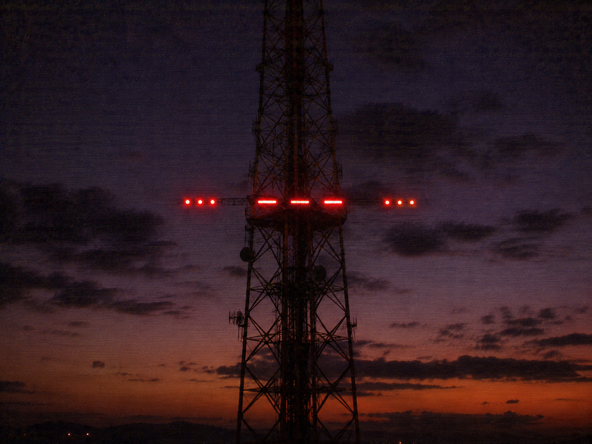

▓▓▓▓▓▓▓▓▓▓▓▓▓▓▓▓▓▓▓▓▓▓▓▓▓▓▓▓▓▓▓▓▓▓ · D E S C E N T · 16 / 40 · ▓▓▓▓▓▓▓▓▓▓▓▓▓▓▓▓▓▓▓▓▓▓▓▓▓▓▓▓▓▓▓▓▓▓

It threw its voice across the whole dark, certain that nothing could be larger than it. First it sounded an alarm. Listen for the bell.
-.- .-.. .- -..- --- -.
morse — short and long.